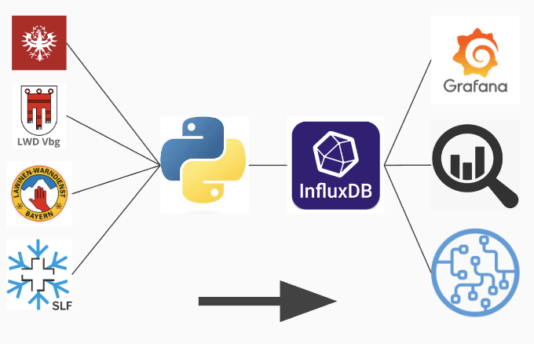

AlpineMeteo
Hier findest du alle wichtigen Informationen zur AlpineMeteo WebApp. AlpineMeteo ermöglicht es dir Wetterdaten verschiedenster Messstationen im Alpenraum in einheitlicher und übersichtlicher Art und Weise darzustellen.
Wie funktionierts?
AlpineMeteo sammelt die Messwerte der Wetterstationen von frei verfügbaren Lawinenwarn- und Wetterdiensten verschiedener Regionen.
Diese Messwerte dienen zur weiteren Verarbeitung, Visualisierung, Analyse, etc..
Abdeckung
Momentan werden folgende Gebiete von AlpineMeteo abgedeckt:
Schweiz
Österreich
Vorarlberg
Tirol
Salzburg
Deutschland
Bayern
Frankreich
Isère
Savoie
Italien
Aosta
Südtirol
Trentino
Quellen
LWD Tirol
LWD Vorarlberg
LWD Salzburg
Lawinenwarndienst Bayern
SLF
lawis.at
Land Salzburg
Land Tirol
iav portal
Centro Funzionale Regionale Aosta